"Bà xong Thạc sỹ rồi phải không? Tiến sĩ xong luôn chưa bà?"
Mình hớn hở nhắn tin hỏi bà Hương Trà từ Nhật Bản như vậy, thì được bả cập nhật luôn, là tui xong PhD (Tiến sĩ) rồi, xong Post-doc (hậu tiến sĩ) luôn rồi, tui làm Assistant Professor cho trường Tsukuba mấy năm nay, rồi mới đây thì tui qua Viện nghiên cứu rồi bà.
Hết hồn thiệt chớ… Bạn bè mình quá giỏi luôn, trong giới học thuật, mình rất ngưỡng mộ các bạn bè mình.
Hôm trước mình phỏng vấn Hương Trà về việc đọc ở Nhật Bản rồi.
Nay mình lại tiếp tục giới thiệu thêm các bạn bè mình ở các nơi khác nhau trên thế giới nữa nha, và những trải nghiệm của họ về việc con đọc sách nữa.
Úc
Chị bạn mình có 3 con, 2 bé trai lớn sinh tại Việt Nam và bé gái thứ 3 chị sinh tại Úc. Điều thú vị và bất ngờ là, nếu ở Việt Nam, ngày trước, khi đi sinh, thỉnh thoảng ở các bệnh viện lớn hoặc bệnh viện tư, sẽ có 1 món quà hoặc 1 phần..sữa công thức tặng mẹ và bé. (May mắn là sau này mẹ và bé có luật pháp bảo vệ nên các công ty sữa công thức không được làm chuyện này nữa!) Thì nay, trải nghiệm của chị bạn mình ở Úc là, khi chị đi sinh, túi quà nhận được là information bag, một túi thông tin, trong đó có thông tin về ĐỌC SÁCH và vài cuốn SÁCH: SÁCH bìa cứng tặng mẹ và bé mang về. Tuyệt vời chưa!!!!
Bé út năm nay đã 3 tuổi nên khá lâu rồi, chị không nhớ hết trong túi đó có gì, nhưng những gì nhớ được là một số tờ bướm với các số điện thoại cần liên hệ khi có vấn đề, lịch chích ngừa, các thang theo dõi sự phát triển của bé theo từng giai đoạn, ví dụ 1 tháng, 3 tháng thì mình cần làm gì. Các cuốn sách nhỏ bìa cứng cho bé và một vài cuốn sách để mẹ đọc cho con cũng là thành phần của túi phát mang về cho mẹ.
Chị bạn mình là Tiến sĩ Nguyễn Thị Hoàng Phụng.
Chị Phụng kể, đâu đâu cũng có thể tiếp cận sách và miễn phí. Ngay từ khi mới sinh bệnh viện đã tặng cho bé từ túi information. Mỗi khu vực (suburb/town ) có một cái thư viện, một gia đình mỗi thành viên có thể có một thẻ, mỗi thẻ được mượn tối đa 12 thứ (items), trong ba tuần. Nghĩa là một nhà cứ nhân lên có thể mượn Tùy ý. Mỗi thứ 5 hàng tuần có một buổi sinh hoạt cho trẻ em do thư viện tổ chức (chị có gửi hình).
Mỗi trường cũng đều có thư viện. Mỗi lớp cô giáo lại có tổ chức từng loại sách riêng theo chủ đề. Trẻ em có tài khoản đọc sách online và trả lời câu hỏi (quiz). Chủ đề sách được tổ chức theo nhóm tùy sở thích của từng em. Các em muốn đọc gì cũng được, đọc xong có thể trả lời câu hỏi( quiz). Làm một quiz học sinh được 1 điểm. Ở các mốc điểm 25, 50,100,150, 250, 500 trẻ đều có giấy chứng nhận (certificate - hình đính kèm).
Tuy nhiên mức độ phức tạp của sách thì được cô giáo cho làm test trong lớp để phân loại (phần dưới bài viết này có nói về test đó) và giúp trẻ chọn lựa sách. Một số gia đình sau khi đọc xong sách có thể cho lên một trang cho đồ miễn phí trong khu vực nếu mình thích có thể xin sách về.
Chị Phụng có giới thiệu mình đến với khái niệm Lexile Level. Đây là một phương pháp phổ biến được trường dùng để đo lường khả năng đọc của học sinh. Công cụ đo lường Lexile rất có giá trị đối với giáo viên, cha mẹ và học sinh. Có thể ở 2 dạng: (1) đo độ khó của chữ hoặc (2) đo khả năng đọc của học sinh. MetaMetrics, một tổ chức nghiên cứu và đo lường giáo dục đã phát triển ra Lexile Framework này, được tài trợ bởi VIện phát triển con người và sức khoẻ trẻ em quốc gia (National Institute of Child Health and Human Development).
Trường sẽ có bài test SRI (Scholatic Reading Inventory), để đo khả năng đọc của trẻ. Hoặc một cách khác để đo lường Lexile là làm 1 bài test đọc tiêu chuẩn. Mức 550 L nghĩa là trẻ ở mức 550 Lexile, mà không bao giờ gọi cái này là "Điểm", mà là thành tựu của học sinh thôi, và mức càng cao thì khả năng đọc của trẻ càng cao. Nếu dưới 5L thì được đánh giá là BR (Beginning Reader, người mới bắt đầu đọc).
Một cuốn sách hoặc tạp chí cũng được đo mức Lexile nữa, dựa trên 2 tiêu chí chính là độ thông thường của từ (word frequency) và sức mạnh của câu (sentence strength). Mức 10L là thấp nhất, dành cho người mới bắt đầu đọc.
Lexile level thường được dùng để đánh giá trong học thuật, hoặc để giúp cha mẹ chọn sách được cho con theo mức độ đọc của trẻ, một cách giúp trẻ thích thú hơn với việc đọc (trong bài trước mình có nói đến những lí do khiến trẻ không thích thú đọc sách).
Riêng mình, thì những năm 2010 - 2012 khi ở Úc, mình cũng thấy ai ai cũng cầm sách là chuyện bình thường, đến cả bác tài xế lái xe đưa đón sinh viên, trong lúc chờ sinh viên, cũng cầm sách đọc.
Các link về Lexile level để mọi người đọc thêm ở comment nếu quan tâm nhé ạ.
Link về Lexile Levels: What Parents Need to Know: https://www.scholastic.com/.../lexile-levels-made-easy.html
Một số cuốn sách tranh thường được chọn. Ba mẹ Việt chắc cũng nhận ra cuốn "Dấu chấm": https://www.scholastic.com/.../teacher-picks--top-25...
Link về một số sách ở mức 500 - 590 Lexile level: https://shop.scholastic.com/.../lexile-collection...
Các mức Lexile level theo lớp: https://encrypted-tbn0.gstatic.com/images?q=tbn:ANd9GcQgT1F-ujk8fPaY_z9P_PwdHP_KgujxFYv4WQ&usqp=CAU
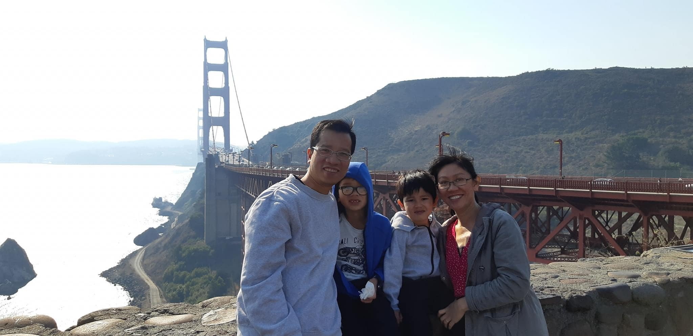
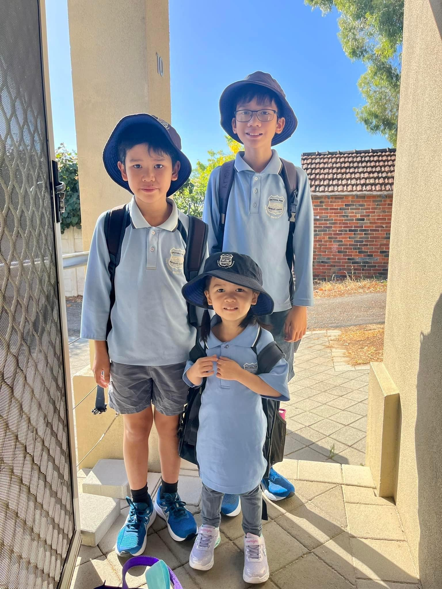

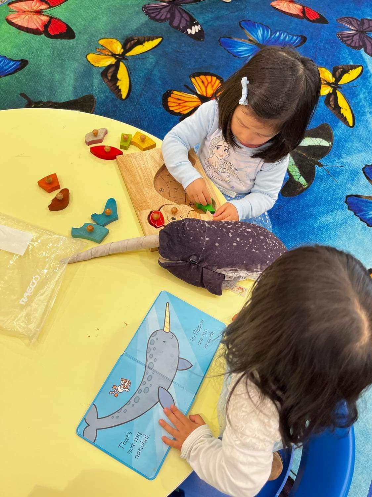
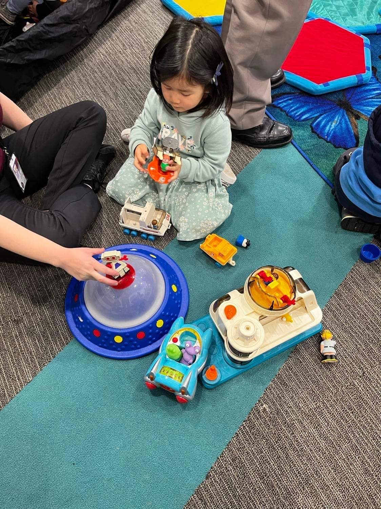
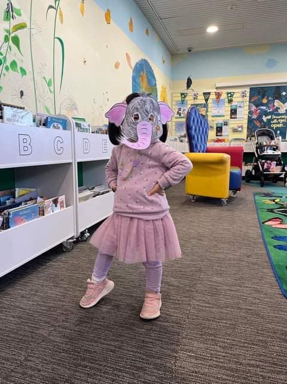
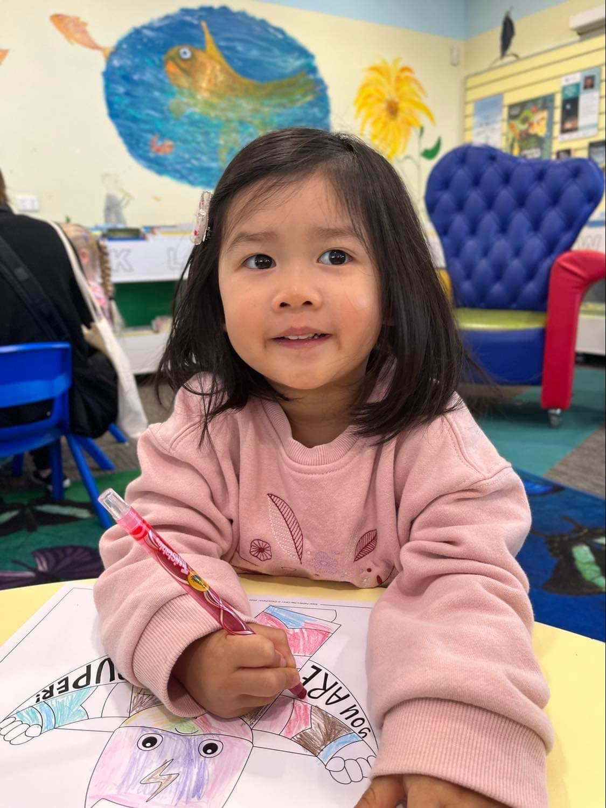
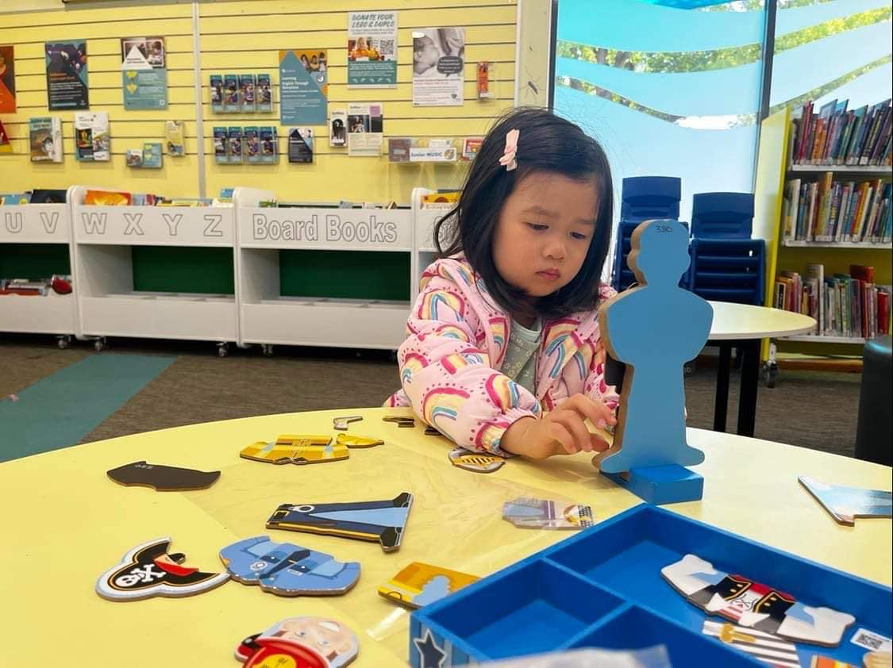
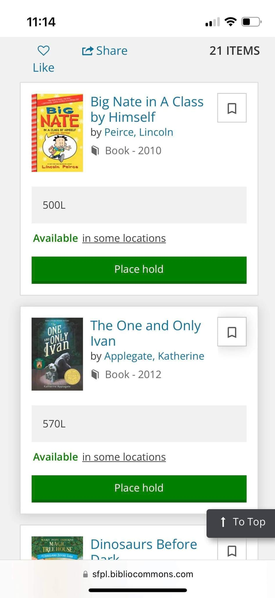
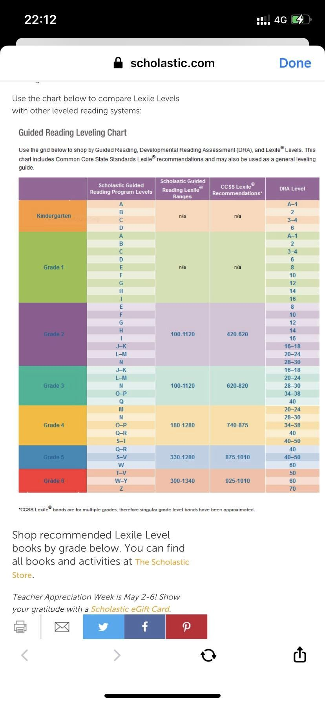
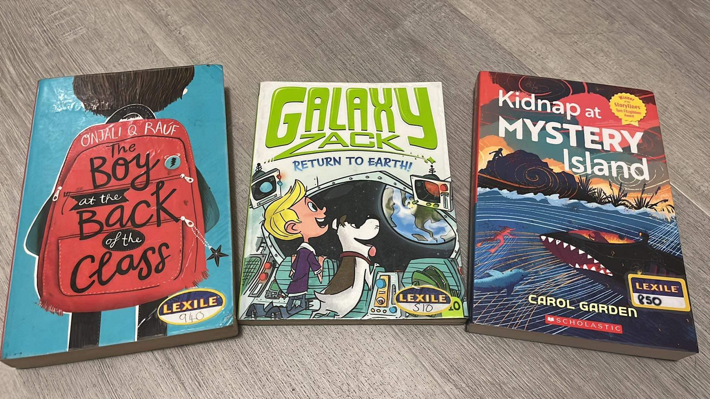
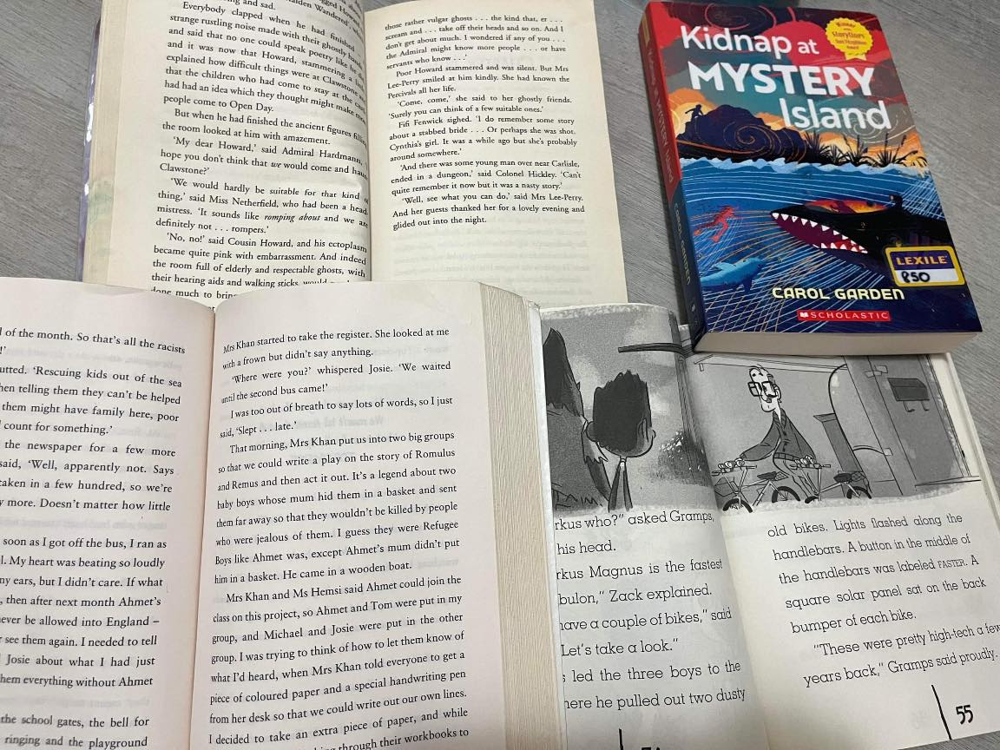
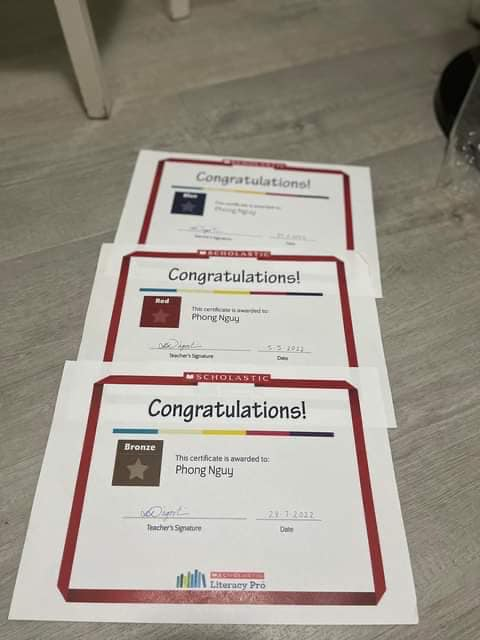
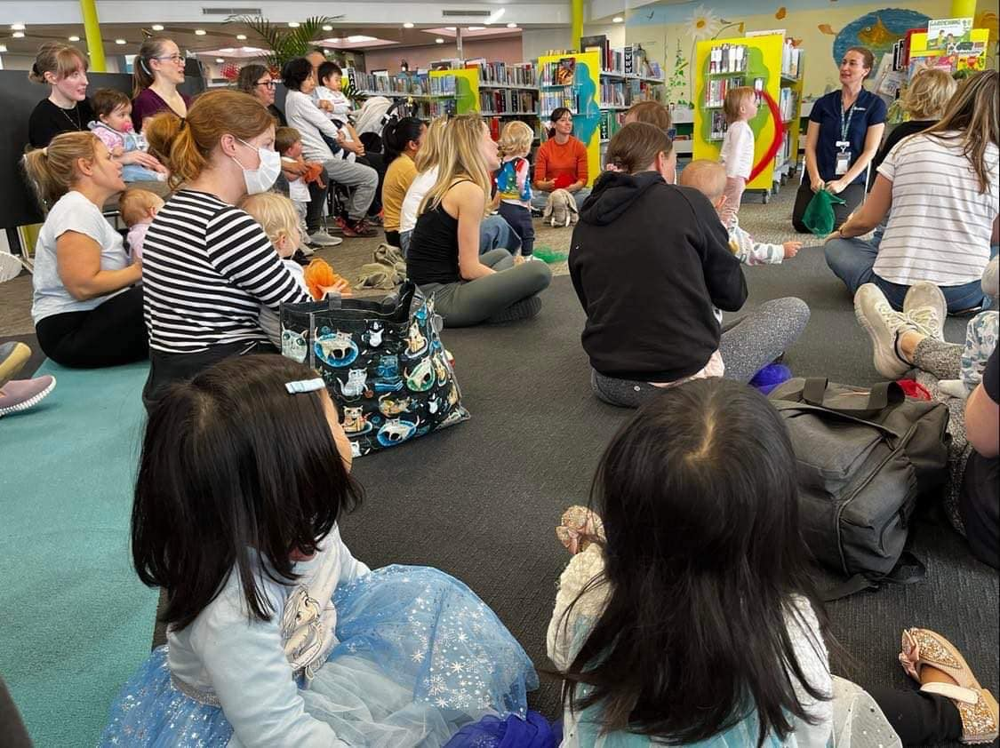